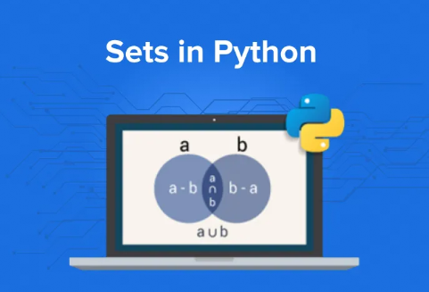

Estruturas de Dados em Python
Na linguagem Python, uma lista é uma sequência ordenada de elementos que podem ser modificados e armazenados em memória, em uma única variável.
A estutura de uma lista em Python permite a inclusão e exclusão de elementos em qualquer lugar da sequência, incluindo o inicio e o fim.
listaNumeros = [1, 2, 3, 4, 5] # ou listaNumeros = list((1, 2, 3, 4, 5)) listaFrutas = ["banana", "maca", "laranja"] # ou listaFrutas = list(("banana", "maca", "laranja")) listaVazia = [] # ou listaVazia = list()
As listas em Python podem ser indexadas, ou seja, acessadas por seus índices, que são numeros inteiros que indicam em que posição um elemento se encontra.
Os índices de uma lista comecam com 0, ou seja, o primeiro elemento está na posição 0, o segundo na posição 1 e assim por diante.
listaFrutas = ["banana", "uva", "laranja"] # Incluir um novo item no fim da lista listaFrutas.append("pera") # Incluir um novo item no inicio da lista listaFrutas.insert(0, "kiwi") # Incluir um novo item em uma posição específica listaFrutas.insert(1, "abacaxi")
listaFrutas = ["banana", "uva", "laranja"] # Excluir um item da lista (apenas a primeira ocorrência do item) listaFrutas.remove("uva") # Excluir o ultimo item da lista listaFrutas.pop() # Excluir o item de uma posição específica da lista listaFrutas.pop(1) # Excluir todos os itens da lista listaFrutas.clear()
listaNumeros = [120, 243,12,3322,78, 114] # Criar uma cópia da lista listaNumerosCopiada = listaNumeros.copy() # Ordenar a lista listaNumeros.sort() # Inverter a ordem da lista listaNumeros.reverse() # Contar quantos elementos tem na lista print(len(listaNumeros)) # Concatenar duas listas listaNumeros1 = [1,2,3,4] listaNumeros2 = [5,6,7,8] listaNumeros3 = listaNumeros1 + listaNumeros2 # Descobrir se um item existe na lista print(4 in listaNumeros) # Encontrar o maior e o menor elemento da lista print(max(listaNumeros)) print(min(listaNumeros)) # Somar todos os elementos da lista print(sum(listaNumeros)) # Contar quantos vezes um elemento aparece na lista print(listaNumeros.count(4))
Crie uma lista com o nome de 5 pessoas e, em seguida, execute as seguintes operações:
# Crie uma lista com o nome de 5 pessoas pessoas = ["Joaquim", "Maria", "Joaquina", "Jose", "Joao"] # Exibir o primeiro e o ultimo elemento da lista print(pessoas[0], pessoas[4 ]) # Joaquim Joao print(pessoas[0], pessoas[-1]) # outra forna # Exibir todos os elementos da lista print(pessoas) # ou... for pessoa in pessoas: print(pessoa) # ou... for i in range(len(pessoas)): # també mpodemos usar while print(pessoas[i]) # Exibir a quantidade de elementos da lista print(len(pessoas))
Na linguagem Python, uma tupla é uma sequência ordenada de elementos que não podem ser modificados e armazenados em memória, em uma única variável.
Para diferenciar uma tupla de uma lista, utilizamos parênteses ao invés de colchetes.
tuplaNumeros = (1, 2, 3, 4, 5) tuplaFrutas = ("banana", "uva", "laranja") tuplaVazia = () tuplaComUmElemento = ("banana",) # note o uso da virgula OBRIGATÓRIA tuplaComTiposDiversos = (1, "banana", 3.14, False)
As tuplas também podem ser indexadas, ou seja, acessadas por seus índices, que são numeros inteiros que indicam em que posição um elemento se encontra.
Os índices de uma tupla comecam com 0, ou seja, o primeiro elemento está na posição 0, o segundo na posição 1 e assim por diante.
tuplaCarros = ("Fiat", "Honda", "Ford", "Honda") print(tuplaCarros[0]) # Fiat print(tuplaCarros[1]) # Honda print(tuplaCarros[2]) # Ford print(tuplaCarros[-1]) # Honda print(tuplaCarros[-2]) # Ford print(len(tuplaCarros)) # 4 print(tuplaCarros.count("Honda")) # 2 print(tuplaCarros.index("Honda")) # 1
tuplaCarros = ("Fiat", "Honda", "Ford", "Honda") print(tuplaCarros[0]) # Fiat print(tuplaCarros[1]) # Honda print(tuplaCarros[2]) # Ford print(tuplaCarros[-1]) # Honda print(tuplaCarros[-2]) # Ford print(len(tuplaCarros)) # 4 print(tuplaCarros.count("Honda")) # 2 print(tuplaCarros.index("Honda")) # 1 (só indica a posição do primeiro elemento)
Crie uma tupla com o nome de 5 cidades e, em seguida, execute as seguintes operações:
cidades = ("Rio de Janeiro", "São Paulo", "Belo Horizonte", "Curitiba", "Florianópolis") # Exibir o primeiro e o ultimo elemento da tupla print(cidades[0]) print(cidades[-1]) # Exibir todos os elementos da tupla for cidade in cidades: print(cidade) # Exibir a quantidade de elementos da tupla print(len(cidades)) # Descibrir se um item existe na tupla print("Belo Horizonte" in cidades)
Crie um programa que cadastre animais para um petshop.
Este desafio combina diversos conceitos já vistos: loops, estruturas condicionais, manipulação de strings...
Um dicionário em Python é uma estrutura de dados que armazena pares chave-valor (key-value). É uma coleção ordenada (a partir da versão do Python 3.7), mutável e que não permite chaves duplicadas'
As chaves em um dicionário podem ser de qualquer tipo imutável, como strings, números ou tuplas. Os valores associados às chaves podem ser de qualquer tipo, incluindo listas, tuplas, outros dicionários e objetos personalizados.
# Criação de dicionário dicionario = {chave1: valor1, chave2: valor2, chave3: valor3} # Dicionário vazio# Dicionário vazio dicionario_vazio = {} # ou dicionario_vazio = dict()
# Exemplo 1: Informações de uma pessoa ---------------------------- pessoa pessoa = { "nome": "João Silva", "idade": 30, "cidade": "São Paulo", "profissao": "Programador" } # Acessando valores print(pessoa["nome"]) # João Silva print(pessoa["idade"]) # 30 print(pessoa["cidade"]) # São Paulo print(pessoa["profissao"]) # Programador # Adicionando novo par chave-valor pessoa["email"] = "joao@email.com" # Modificando um valor existente pessoa["idade"] = 31 # Removendo um item del pessoa["cidade"] # Exemplo 2: Estoque de produtos ---------------------------- estoque = { "notebook": 1515, "mouse": 5050, "teclado": 3030, "monitor": 88 } # Iterando sobre o Dicionário for chave in estoque: print(f"{chave}: {estoque[chave]} unidades") # ou for produto, quantidade in estoque.items(): print(f"{produto}: {quantidade} unidades") # Verificando se uma chave existe if "notebook" in estoque: print("Notebook disponível em estoque")
Vamos criar dois dicionários: pessoa e deposito, O dicionário "pessoa" vai conter o nome, o email e o telefone de uma pessoa e o dicionário "deposito" vai conter o número de uma sala e uma lista de objetos que estão na sala.
Depois de criar os dicionários, vamos executar as seguintes tarefas:
# Criando os dicionários pessoa = { "nome":"Fulano de Tal", "email":"fulano@fakemail.com", "telefone":"(11) 99999-9999" } deposito = { 1:["mesa", "cadeira", "computador", "livro"] } # Incluindo o nome da cidade que a pessoa mora pessoa["cidade"] = "Sao Paulo" # Alterando o email da pessoa pessoa["email"] = "fulanodetal@novomail.com.br" # Removendo o telefone da pessoa del pessoa["telefone"] # Adicionando dois novos objetos à sala deposito[1].append("caneta") deposito[1].append("lapis") # Adicionando uma nova sala sem objetos deposito[2] = [] # Acrescentando um objeto à nova sala deposito[2].append("caderno")
Você consegue exibir cada objeto de cada sala em uma linha separada? (Dica: o comando FOR pode ajudar)
Eis aqui alguns métodos úteis para trabalhar com dicionários:
# Dicionário de exemplo ---------------------------- dicionario = {'fruta': 'banana', 'animal': 'gato', 'numero': 2, 'status': True} # Exemplo de uso dos métodos ----------------------- # copy() dicionario_copia = dicionario.copy() print(dicionario_copia) # {'fruta': 'banana', 'animal': 'gato', 'numero': 2, 'status': True} # get() valor = dicionario.get('fruta') print(valor) # banana # items() itens = dicionario.items() print(itens) # dict_items([('fruta', 'banana'), ('animal', 'gato'), ('numero', 2), ('status', True)]) # keys() chaves = dicionario.keys() print(chaves) # dict_keys(['fruta', 'animal', 'numero', 'status']) # values() valores = dicionario.values() print(valores) # dict_values(['banana', 'gato', 2, True]) # pop() elemento = dicionario.pop('fruta') print(elemento) # banana print(dicionario) # {'animal': 'gato', 'numero': 2, 'status': True} # clear() dicionario.clear() print(dicionario) # {}
Vamos criar um cadastro de alunos e notas para uma escola.
Exemplo: { "Fulano": [9, 8, 7], "Beltrano": [8, 5, 3] }
# Cadastro de Alunos cadastro = {} # Dicionário vazio para armazenar os alunos while True: # Solicitando informações de um aluno nome = input("Digite o nome do aluno (ou 'fim' para encerrar): ") if nome == "fim": break nota1 = float(input("Digite a primeira nota: ")) nota2 = float(input("Digite a segunda nota: ")) nota3 = float(input("Digite a terceira nota: ")) # Armazenando o aluno no dicionário cadastro[nome] = [nota1, nota2, nota3] # Exibindo o catálogo de alunos print("\n=== CADASTRO DE ALUNOS ===") for chave in cadastro: media = sum(cadastro[chave]) / len(cadastro[chave]) if media >= 7: situacao = "Aprovado" else: situacao = "Reprovado" print(f"Nome: {chave} / Média: {media} / Situação: {situacao}")
Um set em Python é uma estrutura de dados que armazena uma coleção de elementos únicos.

# Criação de set meu_set = {elemento1, elemento2, elemento3} # Set vazio set_vazio = set() # Note: {} cria um dicionário vazio, não um set
# Exemplo 1: Removendo duplicatas de uma lista ---------------------------- numeros_com_duplicatas = [1, 2, 3, 2, 4, 1, 5, 3] numeros_unicos = set(numeros_com_duplicatas) print(numeros_unicos) # {1, 2, 3, 4, 5} # Convertendo de volta para lista lista_sem_duplicatas = list(numeros_unicos) print(lista_sem_duplicatas) # [1, 2, 3, 4, 5] # Exemplo 2: Operações com Sets ---------------------------- frutas_joao = {"maçã", "banana", "laranja", "uva"} frutas_maria = {"banana" , "kiwi", "laranja", "manga"} # União (frutas que pelo menos uma pessoa gosta) todas_frutas = frutas_joao | frutas_maria # ou todas_frutas = frutas_joao.union(frutas_maria) # Interseção (frutas que ambos gostam) frutas_comuns = frutas_joao & frutas_maria # ou frutas_comuns = frutas_joao.intersection(frutas_maria) # Diferença (frutas que apenas João gosta) frutas_so_joao = frutas_joao - frutas_maria # ou frutas_so_joao = frutas_joao.difference(frutas_maria) print(f"Todas as frutas: {todas_frutas}") print(f"Frutas em comum: {frutas_comuns}") print(f"Frutas só do João: {frutas_so_joao}")
Crie um programa que controla o acesso de usuários a um sistema qualquer.